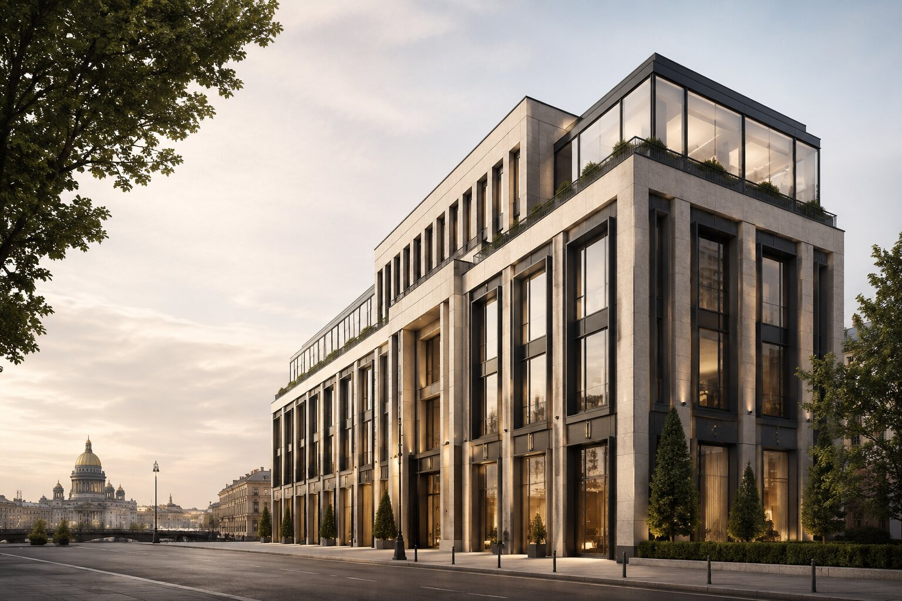
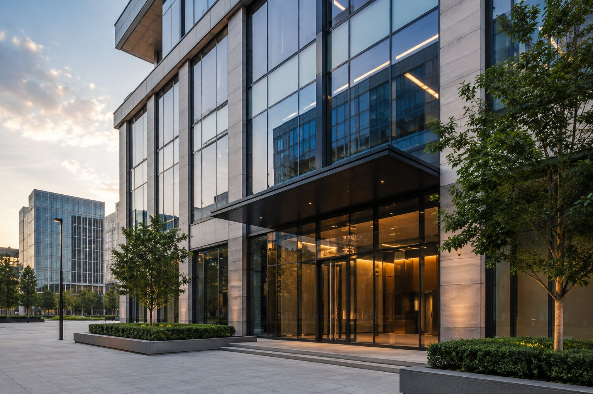
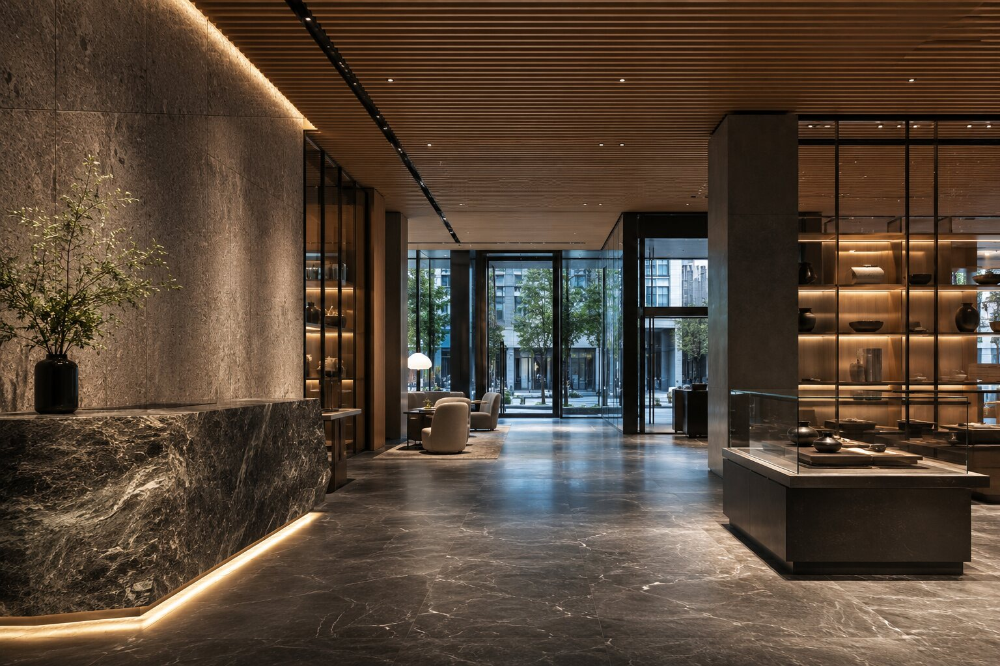
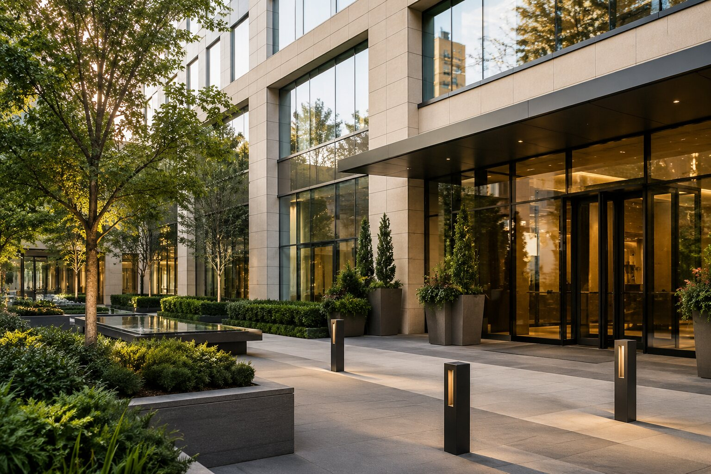

карточки объектов, страницы активов и база для дальнейшего каталога

Портфель
Портфель, который выглядит как актив.
Здесь уже можно показать уровень компании через качество среды, характер активов и более уверенную визуальную подачу, чем у типового агентского сайта.
разные сцены, разный масштаб, меньше ощущения шаблонной недвижимости
этот раздел потом связывается с инвесторами, кейсами и кабинетом собственника
Выборка объектов
Не каталог, а curated-портфель.

Офисный актив в деловом контуре города
Подходит для подачи объектов с акцентом на стабильность, локацию и качество арендаторов.
12 400 м²
97% заполняемость
Class A
Открыть карточку объекта

Коммерческое пространство с премиальной средой
Хорошо работает для объектов, где важны качество среды, отделка и впечатление от эксплуатации.
Открыть карточку объекта
Актив с понятным визуальным языком доверия
Такую сцену можно использовать для карточек объектов, кейсов и блоков инвестиционного участия.
Открыть карточку объектаКарточка объекта
Карточка объекта как мини-кейс.
Что показывать
Фасад, интерьер, параметры, формат управления, статус арендаторов и ключевые показатели объекта.
Как подавать
Через крупные фото, спокойные цифры и ясный маршрут: понять актив, довериться процессу, оставить интерес.
Следующий шаг
Дальше — страница актива.
После этого раздела логично делать отдельную карточку объекта и собирать все в систему шаблонов и компонентов.